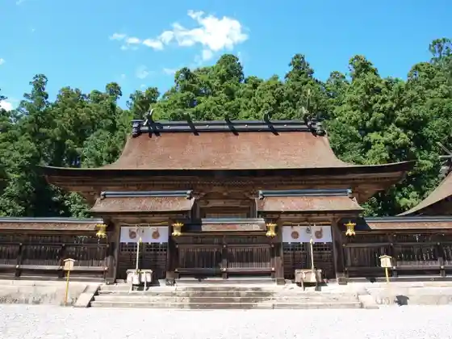
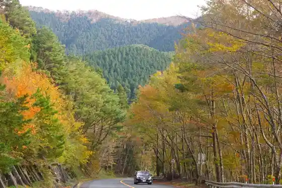
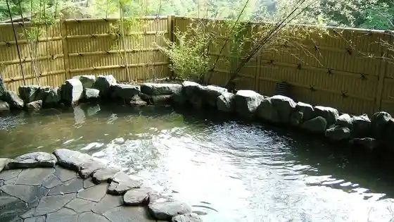
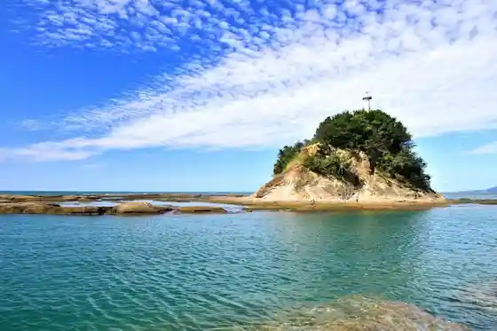

Kumano Motomiya Taisha
Tanabe, Wakayama · 0735-42-0009 · Official / source link

Takano Ryujin Sukai Line
Tanabe, Wakayama · 0739-78-2222 · Official / source link

Ryujin Onsen
Tanabe, Wakayama · 0739-79-0726 · Official / source link

Tenjin Saki
Tanabe, Wakayama · 0739-26-9929 · Official / source link

Yu no Mine Onsen Tsubo Yu
Tanabe, Wakayama · 0735-42-0074 · Official / source link
Dai Sai Hara
Tanabe, Wakayama · 0735-42-0009 · Official / source link
Sennin Furo
Tanabe, Wakayama · 0735-42-0735 · Official / source link
Kizetsu Kyo
Tanabe, Wakayama · 0739-26-9929 · Official / source link
Roadside Station Tanabe Ryujin Gomasan Sukaitawa
Tanabe, Wakayama · 0739-79-0622 · Official / source link
Kinan Kanko Budo Sono
Tanabe, Wakayama · 0739-22-4568 · Official / source link
Tanabe Ogigahama Beach
Tanabe, Wakayama · 0739-26-9929 · Official / source link
Ryujin Village Dragon Museum
Tanabe, Wakayama · 0739-78-0072 · Official / source link
Kumano Kodo Nakahechi Chottoyorimichi Lookout
Tanabe, Wakayama · 0735-42-0735 · Official / source link
Yasukawa Gorge
Tanabe, Wakayama · 0739-48-0301 · Official / source link
Roadside Station Mizu no Sato Hidakagawa Ryu Yu
Tanabe, Wakayama · 0739-77-0380 · Official / source link
Roadside Station Oku Kumano Kodo Hongu
Tanabe, Wakayama · 0735-43-0911 · Official / source link
Roadside Station Ryujin (Uddei Plaza Ki Zoku Kan)
Tanabe, Wakayama · 0739-79-0567 · Official / source link
Aji Koro
Tanabe, Wakayama · 0739-26-9929 · Official / source link
Roadside Station Kumano Kodo Nakahechi
Tanabe, Wakayama · 0739-65-0671 · Official / source link
Minakatakumagusu Kensho Kan Minakatakumagusu Tei
Tanabe, Wakayama · 0739-26-9909 · Official / source link
Wakayamaken Sekai Isan Center
Tanabe, Wakayama · 0735-42-1044 · Official / source link
Goma Dan Yama Forest Park Wairudoraifu
Tanabe, Wakayama · 0739-79-0667 · Official / source link
Tokei Shrine
Tanabe, Wakayama · 0739-22-0155 · Official / source link
Mandara Art Museum
Tanabe, Wakayama · 0739-79-0581 · Official / source link
Mandara Falls
Tanabe, Wakayama · 0739-78-2222 · Official / source link
Nanda Ryuo Sha
Tanabe, Wakayama · 0739-78-2222 · Official / source link
Abe Seimei Sha
Tanabe, Wakayama · 0739-78-2222 · Official / source link
Hosshin Mon Oji
Tanabe, Wakayama · 0735-42-0735 · Official / source link